手把手教你写网络爬虫（1）：网易云音乐歌单
原文出处： 拓海
大家好，《手把手教你写网络爬虫》连载开始了！在笔者的职业生涯中，几乎没有发现像网络爬虫这样的编程实践，可以同时吸引程序员和门外汉的注意。本文由浅入深的把爬虫技术和盘托出，为初学者提供一种轻松的入门方式。请跟随我们一起踏上爬虫学习的打怪升级之路吧！
介绍
什么是爬虫？
先看看百度百科的定义:
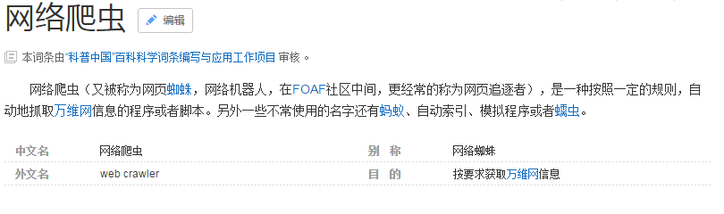
简单的说网络爬虫（Web crawler）也叫做网络铲（Web scraper）、网络蜘蛛（Web spider），其行为一般是先“爬”到对应的网页上，再把需要的信息“铲”下来。
为什么学习爬虫？
看到这里，有人就要问了：google、百度等搜索引擎已经帮我们抓取了互联网上的大部分信息了，为什么还要自己写爬虫呢？这是因为，需求是多样的。比如在企业中，爬取下来的数据可以作为数据挖掘的数据源。甚至有人为了炒股，专门抓取股票信息。笔者就见过有人为了分析房价，自学编程，爬了绿中介的数据。
在大数据深入人心的时代，网络爬虫作为网络、存储与机器学习等领域的交汇点，已经成为满足个性化网络数据需求的最佳实践。还犹豫什么？让我们开始学习吧！
语言&环境
语言：人生苦短，我用Python。让Python带我们飞！
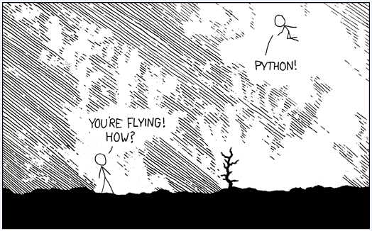
urllib.request：这是Python自带的库，不需要单独安装，它的作用是为我们打开url获取html的内容。Python官方文档的介绍：The urllib.request module defines functions and classes which help in opening URLs (mostly HTTP) in a complex world — basic and digest authentication, redirections, cookies and more.
BeautifulSoup：是一个可以从HTML或XML文件中提取数据的Python库。它能够通过你喜欢的转换器实现惯用的文档导航，查找，修改文档的方式。Beautiful Soup会帮你节省数小时甚至数天的工作时间。安装比较简单：
$pip install beautifulsoup4
验证的方法，进入Python直接import一下，如果没有异常，那就说明安装成功了！
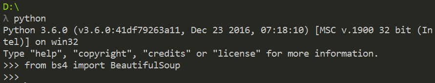
“美味的汤，绿色的浓汤，
在热气腾腾的盖碗里装！
谁不愿意尝一尝，这样的好汤？
晚餐用的汤，美味的汤！”
BeautifulSoup库的名字取自《爱丽丝梦游仙境》里的同名诗歌。
爬取数据
接下来，我们就用urllib.request获取html内容，再用BeautifulSoup提取其中的数据，完成一次简单的爬取。
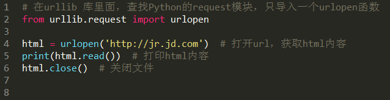
把这段代码保存为get_html.py，然后运行，看看输出了什么：
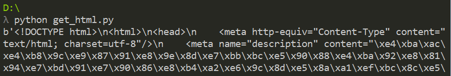
果然，输出了http://jr.jd.com 这个网页的全部HTML代码。
输出的代码简直无法直视，如何方便的找到我们想抓取数据呢？用Chrome打开url，然后按F12，再按Ctrl + Shift + C。如果我们要抓导航栏，就用鼠标点击任意一个导航栏的项目，浏览器就在html中找到了它的位置。效果如下：
定位到的html代码：
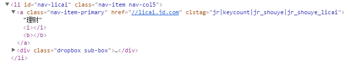
有了这些信息，就可以用BeautifulSoup提取数据了。升级一下代码：
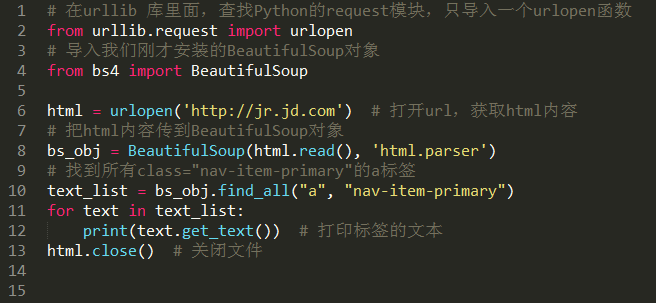
把这段代码保存为get_data.py，然后运行，看看输出了什么：
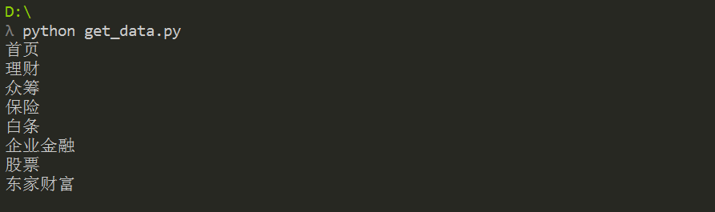
没错，得到了我们想要的数据！
BeautifulSoup提供一些简单的、Python式的函数用来处理导航、搜索、修改分析树等功能。它是一个工具箱，通过解析文档为用户提供需要抓取的数据，因为简单，所以不需要多少代码就可以写出一个完整的应用程序。怎么样，是不是觉得只要复制粘贴就可以写爬虫了？简单的爬虫确实是可以的！
一个迷你爬虫
我们先定一个小目标：爬取网易云音乐播放数大于500万的歌单。
打开歌单的url: http://music.163.com/#/discover/playlist，然后用BeautifulSoup提取播放数<span class=”nb”>3715</span>。结果表明，我们什么也没提取到。难道我们打开了一个假的网页？
动态网页：所谓的动态网页，是指跟静态网页相对的一种网页编程技术。静态网页，随着html代码的生成，页面的内容和显示效果就基本上不会发生变化了——除非你修改页面代码。而动态网页则不然，页面代码虽然没有变，但是显示的内容却是可以随着时间、环境或者数据库操作的结果而发生改变的。
值得强调的是，不要将动态网页和页面内容是否有动感混为一谈。这里说的动态网页，与网页上的各种动画、滚动字幕等视觉上的动态效果没有直接关系，动态网页也可以是纯文字内容的，也可以是包含各种动画的内容，这些只是网页具体内容的表现形式，无论网页是否具有动态效果，只要是采用了动态网站技术生成的网页都可以称为动态网页。
现在我们明白了，这是一个动态网页，我们得到它的时候，歌单还没请求到呢，当然什么都提取不出来！
我们之前的技术不能执行那些让页面产生各种神奇效果的JavaScript 代码。如果网站的HTML页面没有运行JavaScript，就可能和你在浏览器里看到的样子完全不同，因为浏览器可以正确地执行JavaScript。用Python 解决这个问题只有两种途径：直接从JavaScript 代码里采集内容，或者用Python 的第三方库运行JavaScript，直接采集你在浏览器里看到的页面。我们当然选择后者。今天第一课，不深究原理，先简单粗暴的实现我们的小目标。
Selenium：是一个强大的网络数据采集工具，其最初是为网站自动化测试而开发的。近几年，它还被广泛用于获取精确的网站快照，因为它们可以直接运行在浏览器上。Selenium 库是一个在WebDriver 上调用的API。WebDriver 有点儿像可以加载网站的浏览器，但是它也可以像BeautifulSoup对象一样用来查找页面元素，与页面上的元素进行交互（发送文本、点击等），以及执行其他动作来运行网络爬虫。安装方式与其他Python第三方库一样。
$pip install Selenium
验证一下：
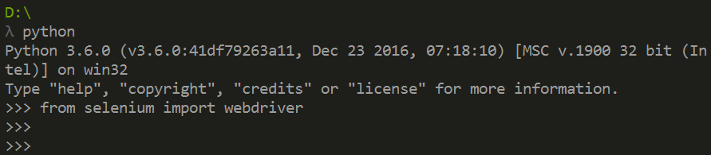
Selenium 自己不带浏览器，它需要与第三方浏览器结合在一起使用。例如，如果你在Firefox 上运行Selenium，可以直接看到一个Firefox 窗口被打开，进入网站，然后执行你在代码中设置的动作。虽然这样可以看得更清楚，但不适用于我们的爬虫程序，爬一页就打开一页效率太低，所以我们用一个叫PhantomJS的工具代替真实的浏览器。
PhantomJS：是一个“无头”（headless）浏览器。它会把网站加载到内存并执行页面上的JavaScript，但是它不会向用户展示网页的图形界面。把Selenium和PhantomJS 结合在一起，就可以运行一个非常强大的网络爬虫了，可以处理cookie、JavaScript、header，以及任何你需要做的事情。
PhantomJS并不是Python的第三方库，不能用pip安装。它是一个完善的浏览器，所以你需要去它的官方网站下载，然后把可执行文件拷贝到Python安装目录的Scripts文件夹，像这样：
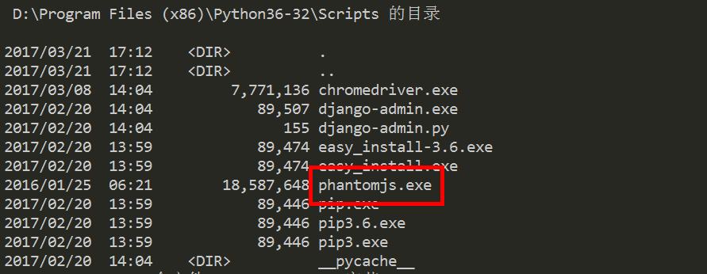
开始干活！
打开歌单的第一页：
http://music.163.com/#/discover/playlist/?order=hot&cat=%E5%85%A8%E9%83%A8&limit=35&offset=0
用Chrome的“开发者工具”F12先分析一下，很容易就看穿了一切。
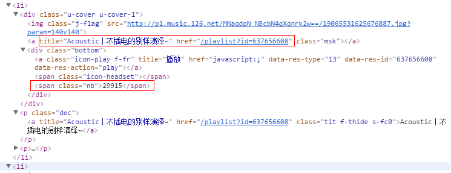
播放数nb (number broadcast)：29915
封面 msk (mask)：有标题和url
同理，可以找到“下一页”的url，最后一页的url是“javascript:void(0)”。
最后，用18行代码即可完成我们的工作。
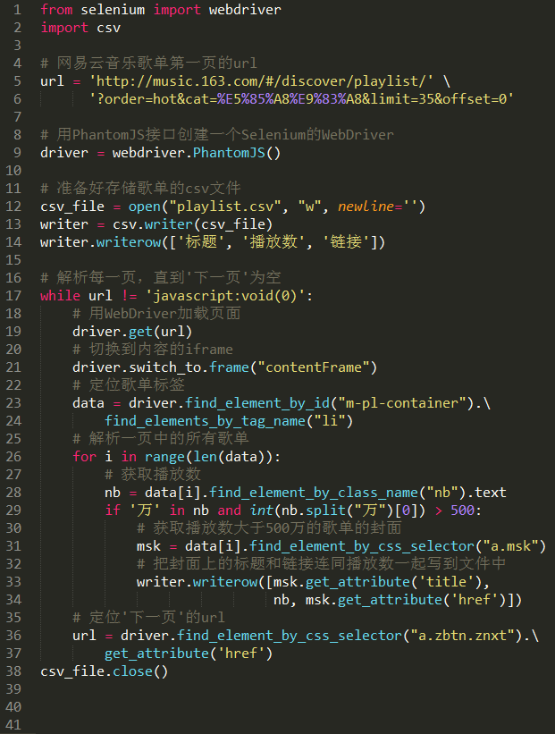
把这段代码保存为get_data.py，然后运行。运行结束后，在程序的目录里生成了一个playlist.csv文件。
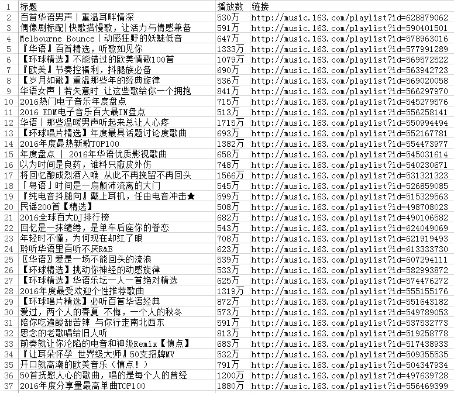
看到成果后是不是很有成就感？如果你感兴趣，还可以按照这个思路，找找评论数最多的单曲，再也不用担心没歌听了！
今天的内容比较浅显，希望对你有用。就先介绍到这里，我们下期再见！
2 赞 18 收藏 23 评论